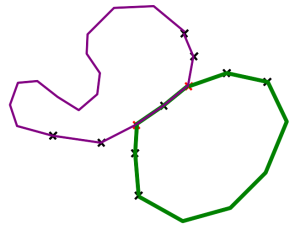
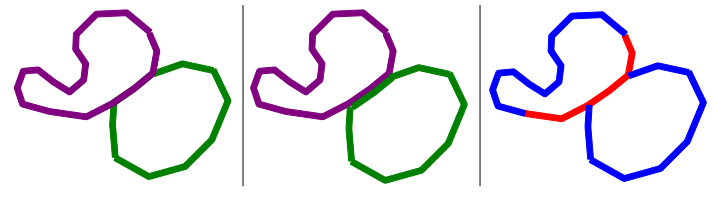

Mapper une piste de ski de fond - Le guide du débutant
Votre piste de ski de fond favorite n'est pas sur la carte? Voici un guide pour vous aider à l'y faire figurer.
Note: L'une des politiques du projet OpenStreetMap c'est de 'taguer comme vous voulez'. Comprenez les éléments ci-après comme la manière dont je procédes, libre à vous de faire autrement.
Note: Vous êtes sur le point d'éditer OpenStreetMap. Cette base de données est libre et ouverte, mais vous devez néanmoins respecter les points suivant:
_N'utilisez pas des données et des cartes sous copyright. En perdant votre temps à ajouter des éléments provenant de Google Maps ou de l'IGN, vous enfreignez leur conditions d'utilisations, et votre travail finira probablement effacé d'OpenStreetMap.
_Ne taguez pas pour le rendu OpenSteetMap n'est pas exactement une 'carte', mais une base de données géographiques. Un logiciel de rendu est celui qui représente une carte à partie de ces données. La priorité ici est de fournir des informations à la base de données. Contactez la personne en charge du rendu sur une carte ou un site web particulier si vous pensez que la représentation des données sur sa carte est fausse ou inadéquate. Garder à l'esprit que la plupart des utilisateurs de ces cartes ne s'intéressent pas au ski de fond!
- Premier pas: enregistrez-vous sur OpenStreetMap
- Les sources
- Editer la carte
- Les tags
- Un chemin est emprunté par ma piste
- Ma piste à un nom et une couleur de balisage
- Le rendu de la piste sur la carte
- Aller plus loin avec les relations
- Liens Utiles
Premier pas: enregistrez-vous sur OpenStreetMap
Pour éditer la carte, il vous faut un compte OpenStreetMap. Inscrivez-vous ici, c'est rapide et gratuit: https://www.openstreetmap.org/user/new
Les sources
Pour ajouter de nouveaux chemins sur la carte, les outils d'éditions mettent à votre disposition des photographies aériennes. Celà peut être suffisant pour tracer une piste de ski de fond. Si par contre vous avez enregistré une trace GPX avec un GPS ou votre téléphone, c'est le moment de l'envoyer au serveur ici: http://www.openstreetmap.org/trace/create L'autre solution est d'utiliser les chemins déjà existant dans la base.
Editer la carte
Pour éditer la carte, commencer par zoomer sur la zone qui vous intéresse, puis utilisez le menu 'Modifier la carte'. Vous pouvez alors choisir entre deux éditeurs en ligne, Potlatch ou Potlatch2. Vous pouvez aussi choisir de télécharger JOSM ou Merkaartor, plus complets.
Aprenez rapidement à utiliser ces éditeurs:
Les tags
En suivant les liens précédants, vous êtes désormais capable d'ajouter un chemin dans OpenStreetMap. Maintenant il s'agit d'ajouter les informations nécessaires pour en faire une piste de ski de fond.
Dans OpenstreetMap vous pouvez utiliser 'les tags que vous voulez'. Bon, pour avoir une chance de voir vos travaux sur une carte, vous pouvez aussi utiliser les tags suivants, qui sont déjà largement employés:
piste:type = nordic piste:type est le tag destiné aux sports d'hiver: ski, raquettes, luge, traineau, ... 'nordic' représente une piste de ski nordique, ou ski de fond, pratiqué avec des skis long et étroits.
Piste:grooming = classic, skating, classic;skating, scooter or backcountry 'Grooming', c'est le damage utilisé sur la piste: alternatif ou skating, voire les deux, ou bien si juste une motoneige passe pour damer. 'Backcountry' signifie qu'il n'y a pas de damage particulier, il faut ici faire la trace!
Piste:difficulty = novice, easy, intermediate, advanced, expert. Ce tag n'est pas là pour mettre des couleurs sur la carte! Une piste 'facile' sur 10km peut présenter seulement 100m de descente dangereuse, c'est cette section là uniquement qui sera tagguée en 'intermediate' ou 'advandced'. Voir plus loin pour marquer les couleurs de balisage. La difficulté d'une piste ne dépend pas de sa longueur non plus: la longueur d'une piste est visible sur une carte!
Novice Piste plate, aucun effort requis (du genre pas à plus de 2km d'un chocolat chaud, ideal pour un point amenity=ski_school). Easy Piste normale, sections en pente courtes. Intermediate Pente importante, ou passage étroits en pente. Un peu de sueur nécessaire. N'utiliser que sur les sections concernées. Advanced Pente importante, avec des passage étroit ou des virage serrés, pistes souvent glacées. N'utiliser que sur les sections concernées. Expert Pente importante, avec des passage étroit ou des virage serrés, pistes souvent glacées. Terrain dangeureux à proximité (falaise). N'utiliser que sur les sections concernées.Un chemin est emprunté par ma piste
Ne superposez pas des chemins. Le même chemin peut être utilisé par différent utilisateurs, pas seulement des skieurs!
- Couper les chemin sur les points ou il croise la piste de ski de fond.
- Ajouter les tags nécessaires sur le chemin existant entre ces points (soit piste:type=nordic, …)
- Assurez-vous que les chemins sont bien connectés entre eux

Ma piste à un nom et une couleur de balisage
On va pouvoir faire une super carte avec ces infos. Mais si c'est une piste 'bleue', ne lui mettez pas juste le tag 'easy'!
On peut ajouter beaucoup plus d'information dans la base à l'aide des relations. Les relations sont un groupe de chemin et de points qui partagent des caractéristiques communes. Pour les pistes de ski de fond, il s'agit de 'routes'. Dans l'exemple ci-dessous, nous avons deux boucles, la piste verte et la piste violette.

Dans votre editeur favori, sélectionner tout les chemins composant la piste verte et créez une relation avec les tags suivants:
type=route
route=piste
piste:type=nordic
Voici une route minimale créée.
Tags optionnels name = * ref = nombre operator = * network = * description = * distance = nombre - longueur officielle de la piste colour = green utilisez ici un code couleur ou un code hexa like #FFFF00 symbol = symbole de balisage, description osmc:symbol = * symbole de balisage, description lisible par un logiciel (voir Key:osmc:symbol) website = * - adresse d'un site web (par ex. les conditions d'enneigement)
Notez bien que tout les membres d'une relation de type route 'piste:type=nordic' ne sont pas forcément destiné au ski de fond. Il se peut que vous ayez à déchausser les skis pour marcher le long d'une route secondaire (highway=secondary) un moment sur une pistes particulièrement longue. Cette petite marche peut pourtant faire partie de la relation.
Plus d'infos sur la création de relation dans différents éditeurs: Potlatch FAQ - JOSM
Le rendu de la piste sur la carte
C'est le role du logiciel de rendu (ou de celui qui s'en occupe) de décider comment représenter une piste. Voici trois solutions:
|
La piste verte et la piste violette peuvent se chevaucher, ou être représentées cote à cote (si vous savez comment faire, dites-le moi!) En aucun cas un seul chemin sur le terrain ne doit être tracé comme deux chemins superposés ou parallèles dans OpenStreetMap. |
La carte peut uniquement montrer les difficultés avec des couleurs, ici les deux pistes se partagent une section 'piste:difficulty = intermediate'. Cette section ne peut pas être facile ET difficile. |

Aller plus loin avec les relations
D'autres informations peuvent être insérées dans une relation à l'aide des 'roles' de chacun de ses membres.
Role = forward/backward
Si le chemin concerné à un sens obligatoire, soit dans le sens dans lequel vous l'avez tracé ou l'inverse.
role = link
Une liaison qui n'est pas membre de la relation, mais qui la relie au reste du 'network'.
role = shortcut/variant
Variantes et raccourcis
role = start
Points d'entrée
Liens utiles
OSM: Guide du débutant Piste Map proposal (comment tagguer les pistes) Route=piste proposal (how to tag pistes relations)